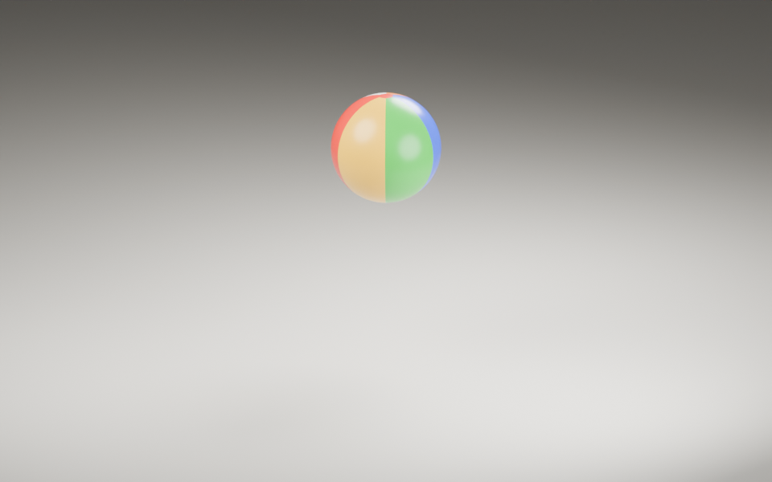

Bring a ball
to life.
One beach ball. Seven steps from a saved pose to believable movement.

What do you remember?
Before animation, check the object you are about to move.
Modeling · shape or object?
Object Mode moves the whole object. Edit Mode changes its mesh. Our ball has radius 1; its center is one unit above the floor. Check the origin before animating.
Revisit modeling ↗Shaders · why does it look like vinyl?
Six panel materials, Metallic at 0, and moderate Roughness. A broad highlight describes the curved surface. Reduce roughness and compare the reflection.
Revisit materials ↗Animation · what gets stored?
A keyframe stores a property value at a frame. Blender calculates the values between keys. An object can move without a new key on every frame.
Test your understanding ↓A keyframe is a saved value.
Choose the property, choose the frame, save the value. Everything between is calculated.
Time + property + value
Frame 13 → Master local Y = 0.
The ball touches the floor.
Frame 25 → Master local Y = 3.
The ball is three units higher.
At 24 fps, twelve frame intervals take half a second.
Try it · 3 min
Find the contact pose.
Reveal a solution
In the vertical file, select Armature → Pose Mode → Master. At frame 13, local Y Location is 0. At frame 25 it is 3.
Record deliberately.
Manual keys give you precision. Auto Key speeds up changes once you understand what it records.
Manual first. Automatic second.
- At frame 13, set Master local Y to 0 and insert a key.
- At frame 25, set Master local Y to 3 and insert a second key.
- At frame 37, set Master local Y to 0 and insert a third key.
With Auto Key, transform the control in Pose Mode, then inspect the Timeline. It records supported changes; it does not invent the first pose or animate every setting automatically.
Try it · 5 min
Record one higher pose at frame 25.
Reveal a solution
Select Master. Set local Y Location to 4, then right-click that field → Insert Single Keyframe. Scrub away and back to verify it was recorded. Undo after checking.
Same keys. Different movement.
Interpolation changes how Blender travels between your saved values.

Smooth is not always right.
Automatic Bézier handles ease into every key. This is soft at the top, but also slows down before impact. A bounce needs a sharper contact.
Select keys in the Dope Sheet or Graph Editor, then use Key → Interpolation Mode (T).
Try it · 3 min
Compare Linear with Bézier on one bounce.
Reveal a solution
Duplicate the action. Select the Master local Y keys between frames 13 and 37. Use T → Linear, play, then T → Bézier. Linear gives constant speed between keys; shaped Bézier handles produce acceleration.
Shape the speed, not just the path.
A flat tangent means low vertical speed. A steep tangent means fast vertical movement.
Soft apex. Sharp contact.
Gravity slows the rise, then accelerates the fall. Keep the top of each arc rounded.
At impact the velocity changes direction quickly. Split the contact handles with Key → Handle Type → Free (V). An automatic flat handle at ground level makes the ball float.
In the Graph Editor, select a key and use G X to change timing; G Y changes the value.
Try it · 7 min
Make one contact feel sharp.
Reveal a solution
Inspect frame 37 in the vertical file. Its Master local Y handles are Vector. Compare with Auto Clamped in a duplicate action: the flattened contact slows the ball at the floor.
Give each job its own control.
A simple rig separates movement from the mesh. You animate the controls in Pose Mode.
MasterLocal Y = height; local X = travel.Rotation_BoneLocal Z rotation turns the panel pattern.Stretch_Top_BoneMove the top to compress or stretch.Stretch_Bottom_BoneAdjust the lower end during flight.Stretch_Middle_BoneInspect the middle deformation control.
Select Armature, enter Pose Mode, then select a control. Bone-local axes differ from the world axes.
Read the current animation
The vertical file keys Master local Y and Stretch_Top_Bone. The travel file adds Master local X, Rotation_Bone local Z rotation, and bottom stretch. Inspect the existing constraints before changing the rig.
Try it · 5 min
Move the ball without changing its shape.
Reveal a solution
Use Master local X for travel. Rotation_Bone changes orientation; stretch controls change the silhouette. Reset your test changes before continuing.
First, make it bounce in place.
Solve one channel before adding travel: Master local Y Location.
Original Blender render · 24 fps scene · replay returns to the first pose.
Less height. Less time.
Start with one convincing bounce. Then reduce the height and duration of each later bounce.
| Frame | Master local Y | Pose |
|---|---|---|
| 0 | 3 | Release |
| 13 | 0 | Contact |
| 25 | 3 | Apex |
| 37 | 0 | Contact |
| 47 | 2.1 | Lower apex |
| 57 | 0 | Contact |
Continue the settle
Frame/value pairs: 64/1.3, 73/0, 79/0.75, 85/0, 88/0.3, 93/0, 96/0.075, 97/0. Hold at 0 through frame 108. These are teaching values, not a rigid-body simulation.
Try it · 15 min
Make the second rebound half as high.
Reveal a solution
In the vertical file change the Master local Y key at frame 47 from 2.1 to 1.05. Keep contacts at frames 37 and 57 at zero. Then discuss whether shortening the timing would make the smaller bounce more convincing.
Now let it travel and turn.
Keep the vertical bounce. Layer horizontal motion and rotation on separate controls.
A settling shot, not an endless loop. Watch the colored panels to read the rotation.
Build it in layers.
- Master: animate local X from −4 at frame 0 to +4.1 at frame 99.
- Rotation_Bone: animate local Z rotation so the panels turn in the direction of travel.
- Stretch_Top_Bone: key local Y: −0.4 at frame 13, recovering to +0.4 at frame 15 in the travel example.
Spin can continue in the air. For rolling contact, use distance ÷ radius as a starting angle in radians, then judge the contact visually.
Read the revised stretch controls
This file animates top and bottom control locations rather than directly scaling the mesh. At frame 13 the top local Y is −0.4 and the bottom is 0. At frame 15 they are +0.4 and −0.2. Check the silhouette and floor contact as you adjust them.
Try it · 20 min
Remove spin without changing the path.
Reveal a solution
In a duplicate travel action, mute Rotation_Bone local Z rotation in the Graph Editor. Master still moves the ball. Restore the curve and compare how the colored panels reveal the spin.
Open. Inspect. Make it yours.
Three original Blender scenes, each at a clear stage. Updated rig and animations · rendered in Blender 5.3.
Build a dynamic machine.
Follow Path, constraints, shape keys and modifiers—then plan your own challenge entry.
Continue to Part 2 ↗